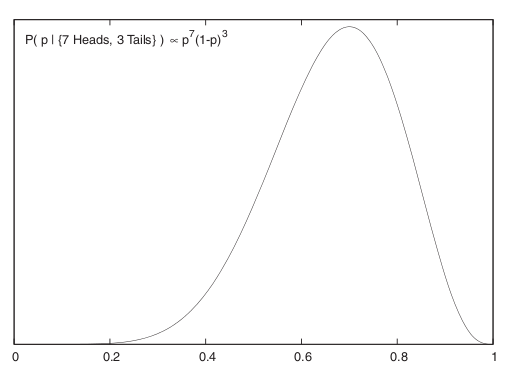
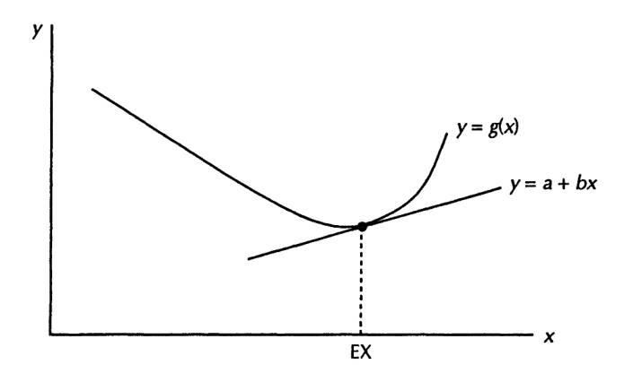
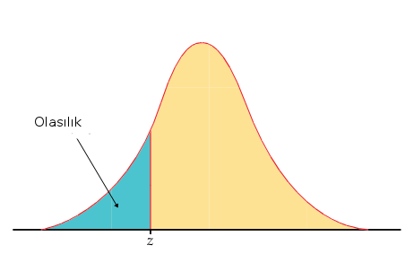

Binom ve \(p\) İçin Maksimum Olurluk Tahmini [1]
\[ L(p;x) = \prod_{i=1}^n f(x_i;p) = \prod_{i=1}^n {n \choose x} p^x(1-p)^{1-x} \]
Log alalım
\[ \log L(p;x) = \sum_{i=1}^n \log {n \choose x} + x \log p + (1-x) \log (1-p) \]
\(p\)’ye göre türevi alalım, bu sırada kombinasyon ifadesi \({n \choose x}\) içinde \(p\) olmadığı için o yokolacaktır,
\[ \frac{\partial \log L(p)}{\partial p} = \frac{x}{p} - \frac{n-x}{1-p} \]
Maksimum değeri bulmak için sıfıra eşitleyelim ve \(p\) için çözelim,
\[ 0 = \frac{x}{p} - \frac{n-x}{1-p} \]
\[ \frac{x}{p} = \frac{n-x}{1-p} \]
\[ p(n-x) = x(1-p) \]
\[ pn - px = x-px \]
\[ pn = x \]
\[ p = \frac{x}{n} \]
Yani \(p\) için maksimum olurluk tahmini \(x/n\).
Bernoulli dağılımı Binom dağılımına çok benzer, sadece onun baş kısmında kombinasyon ifadesi yoktur. Fakat o ifade \(p\)’ye göre türevde nasıl olsa yokolacağına göre Bernoulli dağılımı için de tahmin edici aynıdır.
Bayes Usulü Güven Aralığı (Confidence Intervals)
Bayes ile bu hesabı yapmak için bir dağılımı baz almak lazım. Eğer sonuç olarak bir tek sayı değil, bir dağılım elde edersek bu dağılım üzerinde güvenlik hesaplarını yaparız. Mesela sonuç, sonsal dağılım (posterior) bir Gaussian dağılım ise, bu dağılımın yüzde 95 ağırlığının nerede olduğu, ve nasıl hesaplandığı bellidir.
Bayes Teorisi
\[ P(A \mid B) = \frac{P(B \mid A)P(A)}{P(B)} \]
Veri analizi bağlamında diyelim ki deneyler yaparak tahmini olarak hesaplamak (estimate) istediğimiz bir parametre var, bu bir protonun kütlesi ya da bir ameliyat sonrası hayatta kalma oranı olabilir. Bu durumlarda iki ayrı “olaydan” bahsetmemiz gerekir, B olayı spesifik bazı ölçümlerin elde edilmesi “olayıdır”, mesela ölçüm üç sayıdan oluşuyorsa, biz bir ölçümde spesifik olarak \(\{0.2,4,5.4\}\) değerlerini elde etmişiz. İkinci olay bilmediğimiz parametrenin belli bir değere sahip olması olacak. O zaman Bayes Teorisinin şu şekilde tekrar yazabiliriz,
\[ P(parametre \mid veri ) \propto P(veri \mid parametre)P(parametre) \]
\(\propto\) işareti orantılı olmak (proportional to) anlamına geliyor. Böleni attık çünkü o bir sabit (tamamen veriye bağlı, tahmini hesaplamak istediğimiz parametreye bağlı değil). Tabii bu durumda sol ve sağ taraf birbirine eşit olmaz, o yüzden eşitlik yerine orantılı olmak işaretini kullandık. Bu çerçevede “belli bir sayısal sabit çerçevesinde birbirine eşit (equal within a numeric constant)” gibi cümleler de görülebilir.
Örnek
Diyelim ki bir bozuk para ile 10 kere yazı-tura attık, ve sonuç altta
T H H H H T T H H H
Bu veriye bakarak paranın hileli olup olmadığını anlamaya çalışacağız. Bayes ifadesini bu veriye göre yazalım,
\[ P(p | \{ \textrm{T H H H H T T H H H} \} \propto P(\{ \textrm{T H H H H T T H H H} | p) P(p) \} \]
\(P(p)\) ifadesi ne anlama gelir? Aslında bu ifadeyi \(P([Dagilim] = p)\) olarak görmek daha iyi, artık \(p\) parametresini bir dağılımdan gelen bir özgün değer olarak gördüğümüze göre, o dağılımın belli bir \(p\)’ye eşit olduğu zamanı modelliyoruz burada. Her halükarda \(P(p)\) dağılımını, yani onsel (prior) olasılığı bilmiyoruz, hesaptan önce her değerin mümkün olduğunu biliyoruz, o zaman bu onsel dağılımı düz (flat) olarak alırız, yani \(P(p) = 1\).
\(P( \{\textrm{T H H H H T T H H H} \} | p)\) ifadesi göz korkutucu olabilir, ama buradaki her öğenin bağımsız özdeşçe dağılmış (independent identically distributed) olduğunu görürsek, ama bu ifadeyi ayrı ayrı \(P( \textrm{T} | p)\) ve \(P( \textrm{H} | p)\) çarpımları olarak görebiliriz. \(P( \textrm{T} | p) = p\) ve \(P( \textrm{H} | p)=1-p\) olduğunu biliyoruz. O zaman
\[ P(p | \{ \textrm{7 Tura, 3 Yazı} \} \propto p^7(1-p)^3 \]
Grafiklersek,

Böylece \(p\) için bir sonsal dağılım elde ettik. Artık bu dağılımın yüzde 95 ağırlığının nerede olduğunu rahatça görebiliriz / hesaplayabiliriz. Dağılımın tepe noktasının \(p=0.7\) civarında olduğu görülüyor. Bir dağılımla daha fazlasını yapmak ta mümkün, mesela bu fonksiyonu \(p\)’ye bağlı başka bir fonksiyona karşı entegre etmek mümkün, mesela beklentiyi bu şekilde hesaplayabiliriz.
Onsel dağılımın her noktaya eşit ağırlık veren birörnek (uniform) seçilmiş olması, yani problemi çözmeye sıfır bilgiden başlamış olmamız, yöntemin bir zayıflığı olarak görülmemeli. Yöntemin kuvveti elimizdeki bilgiyle başlayıp onu net bir şekilde veri ve olurluk üzerinden sonsal tek dağılıma götürebilmesi. Başlangıç ve sonuç arasındaki bağlantı gayet net. Fazlası da var; ilgilendiğimiz alanı (domain) öğrendikçe, başta hiç bilmediğimiz onsel dağılımı daha net, bilgili bir şekilde seçebiliriz ve bu sonsal dağılımı da daha olması gereken modele daha yaklaştırabilir.
Moment
Olasılık matematiğinde “moment üreten işlevler” olarak adlandırılan, başlangıçta pek yararlı gibi gözükmesede bir takım matematiksel özellikleri olduğu için, ispatlarda oldukça işe yarayan bir kavram vardır.
Her rasgele değişkenin bir dağılımı olduğunu biliyoruz. Her rasgele değişkenin de ayrıca bir moment üreten fonksiyonu da vardır. Ayrıca, moment üreten fonksiyon ile rasgele değişken arasında bire-bir olarak bir ilişki mevcuttur. “Bu neye yarar?” diye sorulabilir; Cevap olarak, mesela cebirsel olarak türete türete bir moment’e geldiğimiz düşünelim, ve tekrar başka bir taraftan, başka bir formülden gene türete türete tekrar aynı moment işlevine geliyorsak, bu demektir ki, iki taraftan gelen rasgele değişkenler (ve tekabül eden dağılımları) birbirine eşittir. Bazı şartlarda moment üreten işlevler ile cebir yapmak, dağılım fonksiyonlarından daha rahat olmaktadır.
Her rasgele değişken için, moment üreten işlev şöyle bulunur.
\(X\) rasgele degiskenin moment ureten operasyonu
\(M(t)=E(e^{tX})\) olarak gösterilir
Ayrıksal operasyonlar için
\[ M(t) = \sum_x e^{tx}p(x) \]
Sürekli işlevler için
\[ M(t) = \int_{-\infty}^{\infty} e^{tx}f(x) \mathrm{d} x \]
Kuram
Gelelim yazımızın esas konusu olan kuramımıza.
Eğer \(X_1, X_2...X_n\) bağımsız rasgele değişken ise, ve her değişkenin \(M_i(t)\) \(i=1,2,3,...n\) olarak, öz olarak aynı olan birer moment üreten işlevi var ise, o zaman,
\[ Y = \sum_{i=1}^n aX_i \]
açılımı
\[ M_y(t) = \prod_{i=1}^n M(a_i t) \]
olacaktır.
İspat
\[ M_y(t) = E(e^{tY}=E(e^{t(a_1X_1+a_2X_2+..+a_nX_n)} \]
\[ = E[\exp(ta_1 X_1 ta_2X_2...+ta_nX_n)] \]
\[ = E[\exp(ta_1X_1)+\exp(ta_2X_2)+ ... + \exp(ta_nX_n)] \]
\[ = E[\exp(ta_1X_1)]+E[\exp(ta_2X_2)]+ ... + E[\exp(ta_nX_n)]\]
Daha önce belirttiğimiz gibi
\[ M_i(t) = E[\exp(tX_i)] \]
olduğuna göre ve \(t\) yerine \(ta_i\) koyulduğunu düşünelim
\[ M_y(t) = \prod_{i=1}^n M_y(a_it) \]
olacaktır.
Bunu \(M_y(t)= (M_i(a_it))^n\) şeklinde de gösterebiliriz.
Markov’un Eşitsizliği (Markov’s Inequality)
\(X\) bir negatif olmayan rasgele değişken olsun ve farz edelim ki \(E(X)\) mevcut [1]. O zaman her \(t > 0\) için
\[ P(X>t) \le \frac{E(X)}{t}\]
doğru olmalıdır.
İspat
\(X > 0\) olduğuna göre,
\[ E(X) = \int_{0}^{\infty} x f(x) \mathrm{d} x = \int_{0}^{t} x f(x) \mathrm{d} x + \int_{t}^{\infty} x f(x) \mathrm{d} x = \]
\[ \ge \int_{t}^{\infty} x f(x) \mathrm{d} x \ge t \int_{t}^{\infty} f(x) \mathrm{d} x = t P(X > t) \]
Çebişev Eşitsizliği (Chebyshev’s Inequality)
Herhangi bir \(t\) değeri için,
\[ P(|X-\mu| > t) \le \frac{\sigma^2}{t^2} \]
ve
\[ P(|Z| \ge k) \le \frac{1}{k^2}\]
ki \(Z = (X-\mu)/\sigma\), ve \(E(X) = \mu\). Bunun bazı akılda kalabilecek ilginç sonuçları \(P(|Z| > 2) < 1/4\) ve \(P(|Z| > 3) < 1/9\) olabilir.
İspat
Yöntem 1
Üstteki Markov’un eşitsizliğini kullanırız, oradan şu sonuca varırız,
\[ P(|X-\mu| \ge t) = P(|X-\mu|^2 \ge t^2 ) \le \frac{E(X-\mu)^2}{t^2} = \frac{\sigma^2}{t^2} \]
İkinci kısım \(t=k\sigma\) kullanılarak elde edilebilir.
Yöntem 2
Olasılık matematiğinde, büyük sayılar kuramı adında anılan ve olasılık matematiğinin belkemiğini oluşturan kuramı ispatlamak için, diğer bir kuram olan Çebişev eşitsizliğini de anlamamız gerekiyor. Çebişev eşitsizliği bir rasgele değişken, onun ortalaması (beklentisi) ve herhangi bir sabit sayı arasındaki üçlü arasında bir ‘eşitsizlik’ bağlantısı kurar, ve bu bağlantı diğer olasılık işlemlerimizde ispat verisi olarak işimize yarar.
İspata başlayalım. Entegral ile olasılık hesabı yapmak için bize bir \(x\) uzayı lazım.
\[ \mathbb{R} = {x: |x-\mu| > t} \]
Yani \(\mathbb{R}\) uzayı, \(x\) ile ortalamasının farkının, \(t\)’den büyük olduğu bütün sayıların kümesidir.
O zaman,
\[ P(|X-\mu| > t) = \int_R f(x) \mathrm{d} x \]
Dikkat edelim \(P(..)\) içindeki formül, küme tanımı ile aynı. O yüzden \(P()\) hesabı ortada daha olmayan, ama varolduğu kesin bir dağılım fonksiyonu tanımlamış da oluyor. Buna \(f(x)\) deriz. \(P()\)’in, \(f(x)\) fonksiyonunun \(R\) üzerinden entegral olduğunu olasılığa giriş dersinden bilmemiz lazım.
Eger \(x \in R\) dersek o zaman
\[ \frac{|x-\mu|^2}{t^2} \ge 1 \]
t’nin denkleme bu şekilde nereden geldiği şaşkınlık yaratabilir. Daha önce tanımlanan şu ibareye dikkat edelim, \(x: |x-u| > t\) diye belirtmiştik. Bu ifadeyi değiştirerek, yukarıdaki denkleme gelebiliriz.
Devam edersek, elimizdeki 1’den büyük bir değer var. Bu değeri kullanarak, aşağıdaki tanımı yapmamız doğru olacaktır.
\[ \int_R f(x) \mathrm{d} x \le \int_R \frac{(x-\mu)^2}{t^2}f(x) \mathrm{d} x \le \int_{-\infty}^{\infty}\frac{(x-\mu)^2}{t^2}f(x) \mathrm{d} x \]
Ortadaki entegral niye birinci entegralden büyük? Çünkü orta entegraldeki \(f(x)dx\) ibaresinden önce gelen kısmın, her zaman 1’den büyük olacağını belirttiğimize göre, ikinci entegralin birinciden büyük olması normaldir, çünkü birinci entegral \(f(x)\) olasılık dağılımına bağlı, entegral ise bir alan hesabıdır ve olasılık dağılımlarının sonsuzlar arasındaki entegrali her zaman 1 çıkar, kaldı ki üstteki \(x\)’in uzayını daha da daralttık.
Evet…Üçüncü entegral ispata oldukça yaklaştı aslında. Standart sapma işaretini hala ortada göremiyoruz, fakat son entegraldeki ibare standart sapma değerini zaten içeriyor. Önce daha önceki olasılık natematiği bilgimize dayanarak, standart sapmanın tanımını yazıyoruz. Dikkat edelim, bu ibare şu anki ispatımız dahilinden değil, haricinden önceki bilgimize dayanarak geldi. Standart sapmanın tanımı şöyledir.
\[ \sigma^2 = \int_{-\infty}^{\infty} (x-\mu)^2f(x) \mathrm{d} x \]
O zaman
\[ \frac{\sigma^2}{t^2} = \int_{-\infty}^{\infty}\frac{(x-\mu)^2}{t^2}f(x)\mathrm{d} x \]
yani
\[ \int_R f(x) \mathrm{d} x \le \frac{\sigma^2}{t^2} = \int_{-\infty}^{\infty} \frac{(x-\mu)^2}{t^2}f(x) \mathrm{d} x \]
ki \(\int_R f(x) \mathrm{d} x\) zaten \(P(|X-\mu| > t)\) olarak tanımlanmıştı.
Örnek
Diyelim ki bir tahmin edicimiz var, onu test etmek istiyoruz, bu bir yapay sinir ağı (YSA) olabilir, ve elimizde \(n\) tane test verisi var. Eğer tahmin edici, yani YSA, hatalı ise \(X_i=1\) olsun, haklı ise \(X_i=0\) olsun. O zaman gözlenen hata oranı (observed error rate) \(\overline{X}_n = n^{-1}\sum_{i=1}^{n} X_i\) olacaktır. Rasgele değişken çıktılarına bakarak bunu bir \(p\)’si bilinmeyen bir Bernoulli dağılımından geliyormuş gibi kabul edebileceğimizi görebiliriz. İstediğimiz gerçek -ama bilinmeyen- \(p\) hakkında irdeleme yapmak. \(\overline{X}_n\)’in gerçek \(p\)’nin \(\epsilon\) yakınında olmama olasılığı nedir?
Bernoulli’lerin özelliklerinden biliyoruz ki
\[ V(\overline{X}_n) = V(X_1) / n = p(1-p)/n\]
Çebişev uygulayınca,
\[ P(|\overline{X}_n - p| > \epsilon) \le \frac{V(\overline{X}_n)}{\epsilon^2} = \frac{p(1-p)}{n\epsilon^2} \le \frac{1}{4n\epsilon^2} \]
Hatırlarsak Bernoulli için \(E(X)=p\). Son geçiş mümkün oldu çünkü her \(p\) için \(p(1-p) \le \frac{1}{4}\) olmak zorundadır. Öyle değil mi? \(p(1-p)\)’nin alabileceği en büyük değer \(p=1/2\) içindir, bundan farklı her \(p\) değeri \(1/4\)’ten küçük bir çarpım verir, mesela \(p=1/3\) için \(1/3 \cdot 2/3 = 2/9\).
O zaman, ve diyelim ki \(\epsilon = .2\) ve \(n=100\) için \(0.0625\) sınırını elde ederiz.
Hoeffding’in Eşitsizliği
Bu eşitsizlik Markov’un eşitsizliğine benziyor, ama daha keskin sonuçlar verebiliyor, yani ufak güven aralıkları elde edebiliyoruz, ki bu daha fazla kesinlik demektir. Bu eşitsizliği iki bölüm olarak vereceğiz,
\(Y_1,Y_2,..,Y_n\) bağımsız gözlemler olsunlar, ki \(E(Y_i)=0\) ve \(a_i \le Y_i \le b_i\) doğru olacak şekilde. O zaman herhangi bir \(t>0\) için
\[ P \bigg( \sum_{i=1}^{n} Y_i \ge \epsilon \le e^{-t\epsilon} \prod_{i=1}^{n} e^{{t^2}(b_i-a_i)^2 / 8} \bigg) \]
\(X_1,..,X_n \sim Bernoulli(p)\) olsun. O zaman herhangi bir \(\epsilon > 0\) icin
\[ P(|\overline{X}_n -p| > \epsilon ) \le 2e^{-2n\epsilon^2}\]
doğru olmalıdır ki, daha önce gördüğümüz gibi, \(\overline{X}_n = n^{-1}\sum_{i=1}^{n} X_i\) olacak şekilde.
İspat için bkz [1, sf. 67].
Örnek
Diyelim ki \(X_1,..,X_n \sim Bernoulli(p)\). \(n=100\) ve \(\epsilon=.2\) olsun. Çebişev esitsizligi ile
\[ P(|\overline{X}_n - p| > \epsilon ) \le 0.0625 \]
elde etmiştik. Hoeffding’e göre
\[ P(|\overline{X}_n - p| > \epsilon ) \le 2e^{-2 (100)(.2)^2} = 0.00067 \]
elde ederiz, ki bu Cebisev’den gelen \(0.0625\)’e göre çok daha ufak bir değerdir.
Jensen’in Esitsizligi (Jensen’s Inequality)
Teori
Eğer \(g\) fonksiyonu dışbükey (convex) ise o zaman
\[ E g(X) \ge g(E(X)) \]
İçbukey için tam tersi geçerli.
Teorinin sözel olarak söylediği eğer \(f\) fonksiyonu dışbükey ise verinin ortalaması (beklentisi) üzerinde \(f\) işletmek, o verinin \(f\) değerlerinin ortalaması ile aynı olmuyor, daha doğrusu ikinci büyüklük birinci için bir alt sınır oluşturuyor, birinci en az ikinci kadar.
İspat
Bir \(L(x) = a + bx\) çizgisi hayal edelim, bu çizgi \(g(x)\)’e tam \(E(X)\) noktasında teğet olsun [1, sf. 66]. \(g\) dışbükey olduğu için her noktada \(L(x)\) çizgisi üzerinde olması garanti,

O zaman
\[ E(g(X)) \ge E(L(X)) \]
\(E(L(X))\) formülünü açalım,
\[ E(L(X)) = E(a + bX) = a + bE(X) \]
Birinci geçiş basit beklenti matematiği. Son formül \(L(x)\)’in \(E(X)\) üzerindeki formu olurdu, o zaman
\[ a + bE(X) = L(E(X)) \]
diyebiliriz.
Şimdi hatırlıyoruz ki teğet çizgi \(g\) ile tam \(E(X)\) noktasında kesişiyor, o noktada değerleri aynı yani, o zaman
\[ L(E(X)) = g(E(X)) \]
Demek ki
\[ E(g(X)) \ge E(L(X)) = g(E(X)) \]
Kısaca
\[ E(g(X)) \ge g(E(X)) \]
Teori ispatlanmış oldu.
Aslında Jensen Eşitsizliğinin daha geniş bir hali ve yorumlaması var, eğer \(g(x)\) genel olarak gayri lineer ise (sadece dışbükey değil) o zaman \(g(x)\)’in ortalaması \(x\) ortalamalarının üzerindeki \(g\) hesabına eşit değildir [2]. Bir alt sınır değil direk eşitsizlikten bahsediyoruz. Bu yorumlamanın da pek çok yerde uygulaması vardır, bu ifadenin ispatı için İstatistik kaynaklarına başvurulabilir.
Kaynaklar
[1] Wasserman, All of Statistics
[2] Denny, The fallacy of the average: on the ubiquity, utility and continuing novelty of Jensen’s inequality https://journals.biologists.com/jeb/article/220/2/139/18635/The-fallacy-of-the-average-on-the-ubiquity-utility
z-Tablosu
Nasıl okunur? Z-değeri -0.8994 için z kolonundan aşağı inilir, ve -0.8 bulunur, x.x9xx yani 9 için .09 kolonuna gidilir ve bu kesişmedeki değer okunur, .1867, yuvarlanarak .19 da kabul edilebilir.

z .00 .01 .02 .04 .05 .06 .07 .08 .09
-3.4 .0003 .0003 .0003 .0003 .0003 .0003 .0003 .0003 .0003 .0002
-3.3 .0005 .0005 .0005 .0004 .0004 .0004 .0004 .0004 .0004 .0003
-3.2 .0007 .0007 .0006 .0006 .0006 .0006 .0006 .0005 .0005 .0005
-3.1 .0010 .0009 .0009 .0009 .0008 .0008 .0008 .0008 .0007 .0007
-3.0 .0013 .0013 .0013 .0012 .0012 .0011 .0011 .0011 .0010 .0010
-2.9 .0019 .0018 .0018 .0017 .0016 .0016 .0015 .0015 .0014 .0014
-2.8 .0026 .0025 .0024 .0023 .0023 .0022 .0021 .0021 .0020 .0019
-2.7 .0035 .0034 .0033 .0032 .0031 .0030 .0029 .0028 .0027 .0026
-2.6 .0047 .0045 .0044 .0043 .0041 .0040 .0039 .0038 .0037 .0036
-2.5 .0062 .0060 .0059 .0057 .0055 .0054 .0052 .0051 .0049 .0048
-2.4 .0082 .0080 .0078 .0075 .0073 .0071 .0069 .0068 .0066 .0064
-2.3 .0107 .0104 .0102 .0099 .0096 .0094 .0091 .0089 .0087 .0084
-2.2 .0139 .0136 .0132 .0129 .0125 .0122 .0119 .0116 .0113 .0110
-2.1 .0179 .0174 .0170 .0166 .0162 .0158 .0154 .0150 .0146 .0143
-2.0 .0228 .0222 .0217 .0212 .0207 .0202 .0197 .0192 .0188 .0183
-1.9 .0287 .0281 .0274 .0268 .0262 .0256 .0250 .0244 .0239 .0233
-1.8 .0359 .0351 .0344 .0336 .0329 .0322 .0314 .0307 .0301 .0294
-1.7 .0446 .0436 .0427 .0418 .0409 .0401 .0392 .0384 .0375 .0367
-1.6 .0548 .0537 .0526 .0516 .0505 .0495 .0485 .0475 .0465 .0455
-1.5 .0668 .0655 .0643 .0630 .0618 .0606 .0594 .0582 .0571 .0559
-1.4 .0808 .0793 .0778 .0764 .0749 .0735 .0721 .0708 .0694 .0681
-1.3 .0968 .0951 .0934 .0918 .0901 .0885 .0869 .0853 .0838 .0823
-1.2 .1151 .1131 .1112 .1093 .1075 .1056 .1038 .1020 .1003 .0985
-1.1 .1357 .1335 .1314 .1292 .1271 .1251 .1230 .1210 .1190 .1170
-1.0 .1587 .1562 .1539 .1515 .1492 .1469 .1446 .1423 .1401 .1379
-0.9 .1841 .1814 .1788 .1762 .1736 .1711 .1685 .1660 .1635 .1611
-0.8 .2119 .2090 .2061 .2033 .2005 .1977 .1949 .1922 .1894 .1867
-0.7 .2420 .2389 .2358 .2327 .2296 .2266 .2236 .2206 .2177 .2148
-0.6 .2743 .2709 .2676 .2643 .2611 .2578 .2546 .2514 .2483 .2451
-0.5 .3085 .3050 .3015 .2981 .2946 .2912 .2877 .2843 .2810 .2776
-0.4 .3446 .3409 .3372 .3336 .3300 .3264 .3228 .3192 .3156 .3121
-0.3 .3821 .3783 .3745 .3707 .3669 .3632 .3594 .3557 .3520 .3483
-0.2 .4207 .4168 .4129 .4090 .4052 .4013 .3974 .3936 .3897 .3859
-0.1 .4602 .4562 .4522 .4483 .4443 .4404 .4364 .4325 .4286 .4247
0.0 .5000 .4960 .4920 .4880 .4840 .4801 .4761 .4721 .4681 .4641
z .00 .01 .02 .04 .05 .06 .07 .08 .09
0.0 .5000 .5040 .5080 .5120 .5160 .5199 .5239 .5279 .5319 .5359
0.1 .5398 .5438 .5478 .5517 .5557 .5596 .5636 .5675 .5714 .5753
0.2 .5793 .5832 .5871 .5910 .5948 .5987 .6026 .6064 .6103 .6141
0.3 .6179 .6217 .6255 .6293 .6331 .6368 .6406 .6443 .6480 .6517
0.4 .6554 .6591 .6628 .6664 .6700 .6736 .6772 .6808 .6844 .6879
0.5 .6915 .6950 .6985 .7019 .7054 .7088 .7123 .7157 .7190 .7224
0.6 .7257 .7291 .7324 .7357 .7389 .7422 .7454 .7486 .7517 .7549
0.7 .7580 .7611 .7642 .7673 .7704 .7734 .7764 .7794 .7823 .7852
0.8 .7881 .7910 .7939 .7967 .7995 .8023 .8051 .8078 .8106 .8133
0.9 .8159 .8186 .8212 .8238 .8264 .8289 .8315 .8340 .8365 .8389
1.0 .8413 .8438 .8461 .8485 .8508 .8531 .8554 .8577 .8599 .8621
1.1 .8643 .8665 .8686 .8708 .8729 .8749 .8770 .8790 .8810 .8830
1.2 .8849 .8869 .8888 .8907 .8925 .8944 .8962 .8980 .8997 .9015
1.3 .9032 .9049 .9066 .9082 .9099 .9115 .9131 .9147 .9162 .9177
1.4 .9192 .9207 .9222 .9236 .9251 .9265 .9279 .9292 .9306 .9319
1.5 .9332 .9345 .9357 .9370 .9382 .9394 .9406 .9418 .9429 .9441
1.6 .9452 .9463 .9474 .9484 .9495 .9505 .9515 .9525 .9535 .9545
1.7 .9554 .9564 .9573 .9582 .9591 .9599 .9608 .9616 .9625 .9633
1.8 .9641 .9649 .9656 .9664 .9671 .9678 .9686 .9693 .9699 .9706
1.9 .9713 .9719 .9726 .9732 .9738 .9744 .9750 .9756 .9761 .9767
2.0 .9772 .9778 .9783 .9788 .9793 .9798 .9803 .9808 .9812 .9817
2.1 .9821 .9826 .9830 .9834 .9838 .9842 .9846 .9850 .9854 .9857
2.2 .9861 .9864 .9868 .9871 .9875 .9878 .9881 .9884 .9887 .9890
2.3 .9893 .9896 .9898 .9901 .9904 .9906 .9909 .9911 .9913 .9916
2.4 .9918 .9920 .9922 .9925 .9927 .9929 .9931 .9932 .9934 .9936
2.5 .9938 .9940 .9941 .9943 .9945 .9946 .9948 .9949 .9951 .9952
2.6 .9953 .9955 .9956 .9957 .9959 .9960 .9961 .9962 .9963 .9964
2.7 .9965 .9966 .9967 .9968 .9969 .9970 .9971 .9972 .9973 .9974
2.8 .9974 .9975 .9976 .9977 .9977 .9978 .9979 .9979 .9980 .9981
2.9 .9981 .9982 .9982 .9983 .9984 .9984 .9985 .9985 .9986 .9986
3.0 .9987 .9987 .9987 .9988 .9988 .9989 .9989 .9989 .9990 .9990
3.1 .9990 .9991 .9991 .9991 .9992 .9992 .9992 .9992 .9993 .9993
3.2 .9993 .9993 .9994 .9994 .9994 .9994 .9994 .9995 .9995 .9995
3.3 .9995 .9995 .9995 .9996 .9996 .9996 .9996 .9996 .9996 .9997
3.4 .9997 .9997 .9997 .9997 .9997 .9997 .9997 .9997 .9997 .9998
Kaynaklar
[1] Gullickson, {}, https://web.archive.org/web/20160312151715/http://pages.uoregon.edu/aarong/teaching/G4075_Outline/node13.html